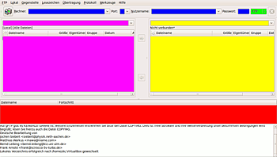

gFTP
Dieser Artikel wurde für die folgenden Ubuntu-Versionen getestet:
Ubuntu 16.04 Xenial Xerus
Ubuntu 14.04 Trusty Tahr
Zum Verständnis dieses Artikels sind folgende Seiten hilfreich:
gFTP  ist ein FTP-Client, dessen Anfänge bis ins Jahr 1998 zurückreichen und der die Grafikbibliothek GTK+ verwendet. Es war eines der ersten grafischen FTP-Programme, was sich in der 2-Spalten-Darstellung wie in den damals üblichen Dateimanagern widerspiegelt. Das Programm unterstützt unter anderem die Protokolle FTP, HTTP, HTTPS, SFTP, FSP und FXP.
ist ein FTP-Client, dessen Anfänge bis ins Jahr 1998 zurückreichen und der die Grafikbibliothek GTK+ verwendet. Es war eines der ersten grafischen FTP-Programme, was sich in der 2-Spalten-Darstellung wie in den damals üblichen Dateimanagern widerspiegelt. Das Programm unterstützt unter anderem die Protokolle FTP, HTTP, HTTPS, SFTP, FSP und FXP.
Eine Alternative ist das neuere Programm FileZilla, das im Funktionsumfang ebenbürtig und – im Gegensatz zu gFTP – plattformübergreifend verfügbar ist.
Installation¶
 Zur Installation ist folgendes Metapaket notwendig [1]:
Zur Installation ist folgendes Metapaket notwendig [1]:
gftp (universe)
 mit apturl
mit apturl
Paketliste zum Kopieren:
sudo apt-get install gftp
sudo aptitude install gftp
Wer auf die Kommandozeilenversion verzichten kann, erhält mit
gftp-gtk (universe)
mit apturl
Paketliste zum Kopieren:
sudo apt-get install gftp-gtk
sudo aptitude install gftp-gtk
nur die Programmvariante mit grafischer Oberfläche.
Einrichten¶
Um das Programm nutzen zu können, ist der allgemeine Aufbau des Programmfensters hilfreich. Die jeweiligen Bereiche sind in nebenstehender Abbildung eingefärbt, um die Zuordnung zu erleichtern:

"blau" (oben) - Eingabe der Daten vom Provider und von der eigenen Internetseite (von links nach rechts)
Rechner - Domainname eingeben
Port - Portwahl; z.B. 21
Nutzername - Name wird vom Provider vergeben
Passwort - Kennwort, um auf die eigene Domain zugreifen zu können
"grün" (rechts oben) - Auswahl des Übertragungsprotokolls
"violett" (Mitte links) - Ordner mit den Dateien, die publiziert werden sollen (lokales Verzeichnis),
oben: Pfad zum aktuellen lokalen Ordner
unten: Inhalt des aktuellen lokalen Ordner
"gelb" (Mitte rechts) - Ordner/Dateien, die bereits hochgeladen sind (entferntes Verzeichnis)
oben: Pfad zum aktuellen entfernten Ordner
unten: Inhalt des aktuellen entfernten Ordner
"rot" (unten) - Statusmeldungen
Konfiguration¶
 Über "FTP -> Optionen" gelangt man zum Einstellungsmenü. Hier gibt es die Kategorien:
Über "FTP -> Optionen" gelangt man zum Einstellungsmenü. Hier gibt es die Kategorien:
"Allgemein" - allgemeine Einstellungen zur Nutzung externer Programme, Arbeitsverzeichnis, Datenübertragungseinstellungen...
"Netz" - Netzwerkeinstellungen, voreingestelltes Protokoll...
"FTP" - Einstellungen für einen ggf. verwendeten Proxy
"HTTP" - Proxy-Einstellungen für das Protokoll
"SSH" - Parameter einstellen
"lokale Rechner" - Netzwerke und Domänen hinzufügen
Sinnvoll war es, unter "Allgemein / Startverzeichnis" den Ordner zu nennen, in dem die Dateien für die eigene Homepage liegen. Dieses Feld ist in der aktuellsten Version nicht mehr vorhanden.
Datenübertragung¶
 Beim Publizieren der Ordner und Dateien ist darauf zu achten, dass die Rechte entsprechend geändert sind. Ansonsten kann die Internetseite u.U. nicht aufgerufen werden. Sie müssen les- und ausführbar sein. Mittels eines
Beim Publizieren der Ordner und Dateien ist darauf zu achten, dass die Rechte entsprechend geändert sind. Ansonsten kann die Internetseite u.U. nicht aufgerufen werden. Sie müssen les- und ausführbar sein. Mittels eines  -Klicks auf die Datei oder den Ordner öffnet sich ein Kontextmenü. Hier die Option "Rechte ändern..." anwählen und entsprechende Änderungen vornehmen. Nun kann die Übertragung der Daten vom oder zum Server erfolgen. Nach Eingabe des Kennworts wird man mit dem Server verbunden - sollte dies nicht der Fall sein, ggf. die Einstellungen des Routers überprüfen.
-Klicks auf die Datei oder den Ordner öffnet sich ein Kontextmenü. Hier die Option "Rechte ändern..." anwählen und entsprechende Änderungen vornehmen. Nun kann die Übertragung der Daten vom oder zum Server erfolgen. Nach Eingabe des Kennworts wird man mit dem Server verbunden - sollte dies nicht der Fall sein, ggf. die Einstellungen des Routers überprüfen.
Nun die entsprechenden Dateien mit der linken Maustaste  auswählen. Mit gedrückter Taste
Strg und der Maus können verschiedene Dateien angewählt werden. Nach beendeter Auswahl die Transferschaltflächen bzw. in der Mitte anwählen und die Dateien werden in die eine oder andere Richtung übertragen. Die Dateien können beliebig kopiert, verschoben oder gelöscht werden. Ist die Datenübertragung abgeschlossen, genügt es, das Symbol "Computer" zu betätigen. Sofern eine Datenübertragung stattfindet, wird diese noch abgeschlossen. Soll diese unterbrochen werden, muss zusätzlich die Schaltfläche oben rechts im Programmfenster angeklickt werden. Alternativ kann hier auch "Übertragung -> Übertragung stoppen" ausgewählt werden.
auswählen. Mit gedrückter Taste
Strg und der Maus können verschiedene Dateien angewählt werden. Nach beendeter Auswahl die Transferschaltflächen bzw. in der Mitte anwählen und die Dateien werden in die eine oder andere Richtung übertragen. Die Dateien können beliebig kopiert, verschoben oder gelöscht werden. Ist die Datenübertragung abgeschlossen, genügt es, das Symbol "Computer" zu betätigen. Sofern eine Datenübertragung stattfindet, wird diese noch abgeschlossen. Soll diese unterbrochen werden, muss zusätzlich die Schaltfläche oben rechts im Programmfenster angeklickt werden. Alternativ kann hier auch "Übertragung -> Übertragung stoppen" ausgewählt werden.
Mehrere Domains¶
Möchte man Daten auf mehrere Domains hochladen, genügt es, nach dem Start der Datenübertragung die Verbindung zur Gegenstelle zu beenden. Das Programm überträgt die Daten weiter, während man eine Verbindung zu einer weiteren Domain aufbaut.
Möchte man die Daten zwischen zwei FTP-Servern übertragen, geht man wie folgt vor:
Verbindung zur ersten Domain aufbauen,
"Lokal -> Öffne URL..."
Adresse des zweiten FTP-Servers eingeben.
Nun können die Dateien übertragen werden.
Hinweis:
Beide Server müssen das erforderliche Protokoll FXP beherrschen. Daten werden unverschlüsselt übertragen (vom Server abhängig).
Abbruch¶
Hat man versehentlich eine falsche Datei oder den falschen Ordner ausgewählt, kann die Datenübertragung noch abgebrochen werden. Dies erfolgt über: "Übertragung -> Übertragung stoppen".
Kein Papierkorb¶
Während das Löschen von Dateien auf einem Server zwangsläufig den Papierkorb umgeht, sollte man sich bewusst sein, dass dies auch beim Löschen von lokalen Dateien der Fall ist. Werden Dateien auf dem eigenen Rechner mit gFTP gelöscht, so ist dieser Vorgang nicht mehr rückgängig zu machen.
Problembehebung¶
TLS/SSL Support¶
Aufgrund von Lizenzproblemen ist die SSL-Unterstützung nicht direkt in gFTP einkompiliert worden. Eine Möglichkeit ist es, dies selbst zu tun (siehe Forum):
Quelltext herunterladen und entpacken
sudo -i apt-get source gftp
In das Verzeichnis
gftp-VERSIONwechseln und einem Editor die Dateidebian/rulesöffnen und die Zeilen--enable-textport=yes \ --disable-ssl
abändern in
--enable-textport=yes
Alle Abhängigkeiten fürs Selbstbauen installieren
apt-get build-dep gftp apt-get install libssl-dev devscripts
Mit
dch -i
die Version des Paketes erhöhen, damit später der update-manager nicht ständig das Paket wieder austauschen möchte. Z.B. auf
gftp (X.Y.ZZ-99ubuntu2) jaunty; urgency=low * -- root <root@janus> Thu, 06 Aug 2009 19:56:29 +0200 gftp (X.Y.ZZ-TTubuntu1) hardy; urgency=low * Sync with Debian * debian/control: - updated maintainer information * debian/rules: - Add gettext domain to .server and .desktop files to get language pack support for them. (Similarly to cdbs' gnome.mk) -- Sebastien Bacher <seb128@canonical.com> Mon, 10 Dec 2007 22:56:06 +0100Das Paket bauen mit
dpkg-buildpackage -us -uc -rfakeroot
Die neuen Pakete installieren mit
cd .. dpkg -i gftp-*.deb
 Übersichtsartikel
Übersichtsartikel- Erstellt mit Inyoka
-
 2004 – 2017 ubuntuusers.de • Einige Rechte vorbehalten
2004 – 2017 ubuntuusers.de • Einige Rechte vorbehalten
Lizenz • Kontakt • Datenschutz • Impressum • Serverstatus -
Serverhousing gespendet von